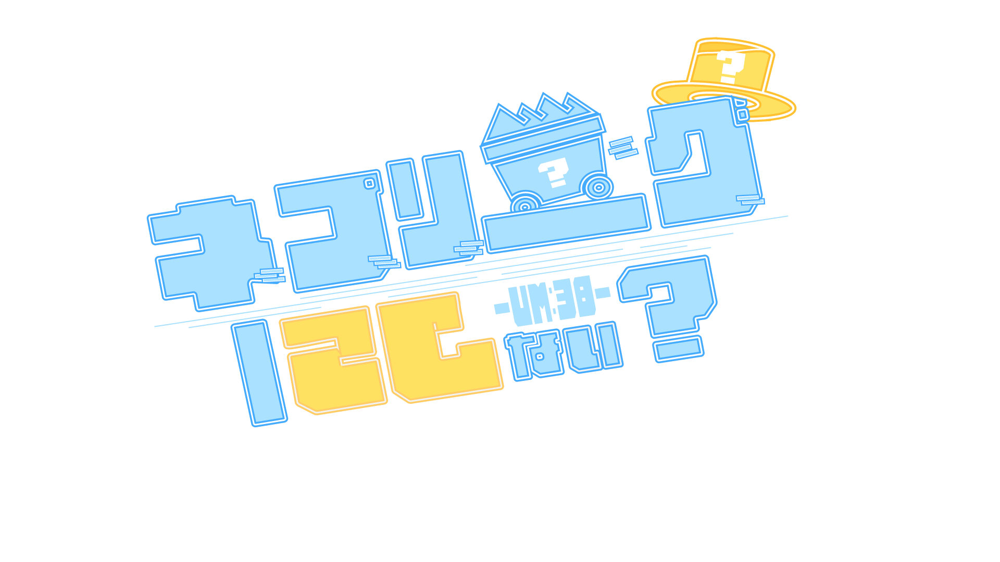
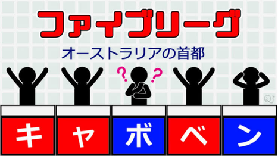
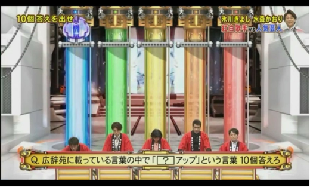
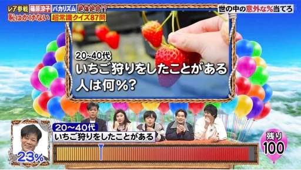
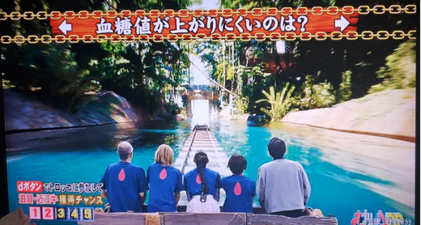
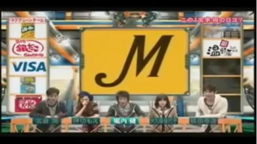

テレビ番組である「ネプリーグ」をリスペクトして作成された、協力型クイズゲームです。
全5つのゲームに挑戦し、勝利を目指しましょう！

答えが5文字で構成される問題を1人1文字ずつ答え、正解を導くゲームです。
※全員が分かっていないと正解できないため、難易度は高いと言えるでしょう。

答えが五つ以上ある問題を一人一つずつ答えを言っていくゲームです。
※後の人のことを考え、できるだけ思いつきづらい答えを言うことが大切です。

あるものの割合を％で答えるゲームです。1％の誤差につき、一つの風船が割れます。
※1回でも大誤差をしてしまったら大ピンチのため、難易度はかなり高いと言えるでしょう。

全五問のシンプルな二択クイズです。
※一度でも間違えると即脱落のため、注意するべきです。

画像のロゴから何のロゴか当てるゲームです。
※意外と分からないため、なめてかかったら痛い目に遭う可能性が高いでしょう。
ルール説明は以上です。
それでは、貴方だけの正解を掴みに行ってきてください。